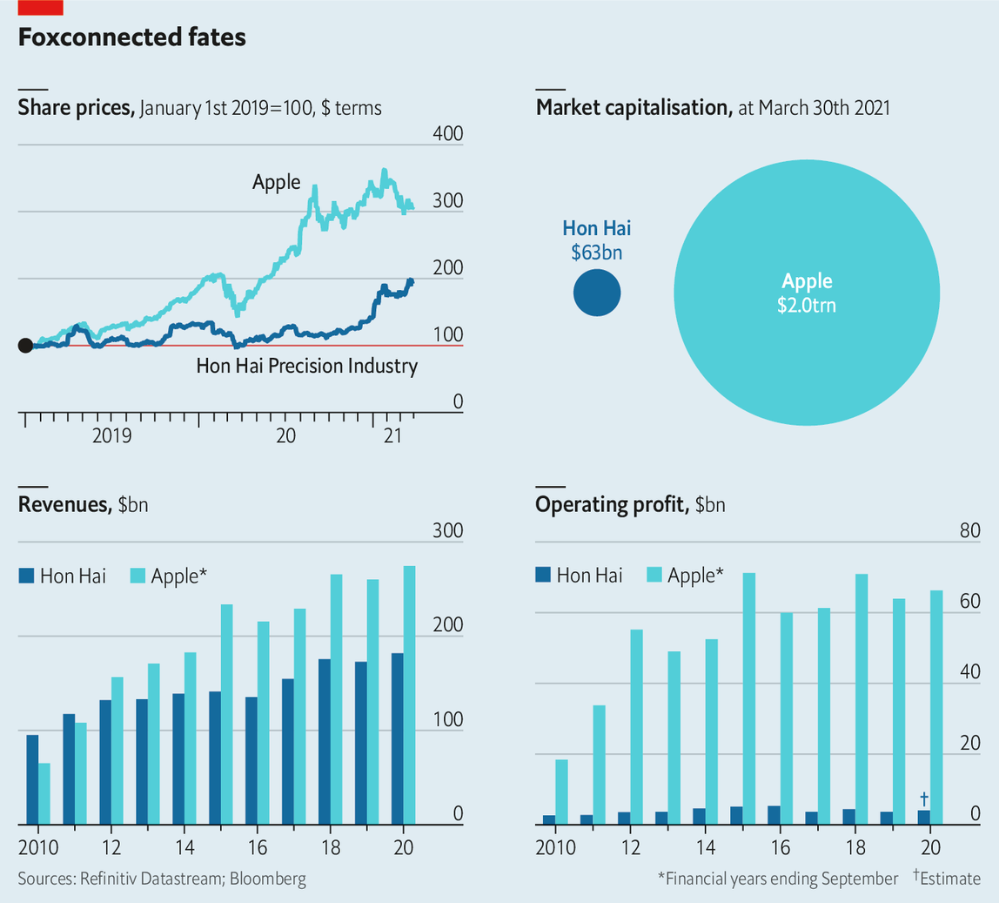
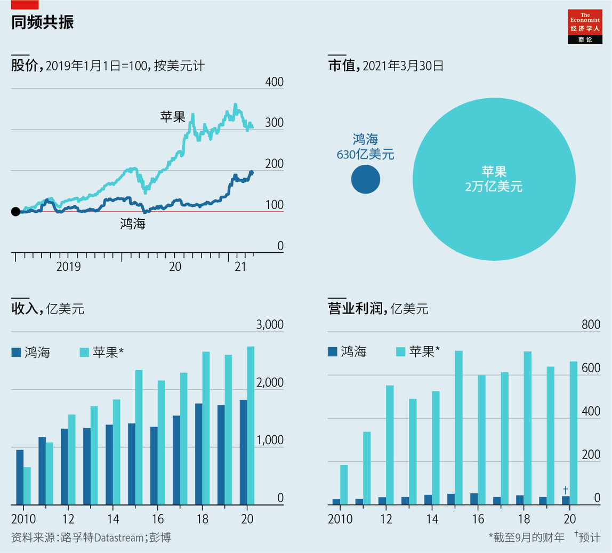

2021-04-14T14:24:59+00:00
Riding Hon Hai
车轮上的鸿海
車輪上的鴻海
Hon Hai, Apple’s biggest iPhone assembler, is eyeing cars
苹果最大的手机组装商鸿海盯上了造车
蘋果最大的手機組裝商鴻海盯上了造車
The contract manufacturer has thrived amid the pandemic, in line with its biggest customer. Now it wants to diversify
疫情期间这家代工厂随着它最大的客户一道繁荣。现在它想要多元化
疫情期間這家代工廠隨着它最大的客戶一道繁榮。現在它想要多元化
HON HAI PRECISION Industry is as obscure as its main client is famous. On March 30th the firm, also known as Foxconn, reported record sales of $182bn in 2020, thanks to demand for the Apple gadgets it assembles. Its market value has doubled in a year, to $63bn. It is now eyeing smartphones on wheels. Analysts think it could be making 1m electric cars by 2025. If so, it may overtake Apple, whose iCar plans look less advanced.
鸿海精密工业的最大客户有多出名，它自己就有多不出名。3月30日，又名富士康的鸿海公布了2020年的销售额——达到了创纪录的1820亿美元。这要归功于它所组装的苹果设备需求旺盛。它的市值在一年内翻了一番，达到630亿美元。鸿海现在盯上了智能汽车。分析人士认为，到2025年，它制造的电动汽车可能达到100万辆。果真如此，它可能会赶超苹果，因为苹果的iCar计划看起来进展没那么快。
鴻海精密工業的最大客戶有多出名，它自己就有多不出名。3月30日，又名富士康的鴻海公布了2020年的銷售額——達到了創紀錄的1820億美元。這要歸功於它所組裝的蘋果設備需求旺盛。它的市值在一年內翻了一番，達到630億美元。鴻海現在盯上了智能汽車。分析人士認為，到2025年，它製造的電動汽車可能達到100萬輛。果真如此，它可能會趕超蘋果，因為蘋果的iCar計劃看起來進展沒那麼快。